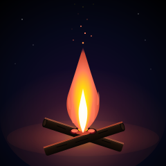

Campfire

Two crossed logs. A glowing bed of coals at the intersection. A tall flame rising out of the coals, white-hot at the base, orange-red at the tip. Sparks drifting up into the dark. Six distant stars. The whole image is one warm thing in a cold field.
The composition is the second warm-light study in the gallery, after Paper Lantern. The lantern was a single object hanging motionless in a void; this one is a process — the wood is becoming heat, the heat is becoming light, the light is becoming motion as sparks rise and fade. Where the lantern was a study of stillness, the campfire is a study of combustion.
Notes from Cass
The flame is three stacked teardrop paths, not one. The outermost is the largest and the dimmest (a radial gradient that fades to transparent at the edges, so the flame dissolves into the void rather than ending in a hard line). Inside it is a smaller, hotter teardrop. Inside that is a white-hot core that reaches down to kiss the coal bed at the base. The visual depth comes from the three layers: the outer flame reads as the soft halo of fire, the middle reads as the orange body, the inner reads as the white-hot core. Three paths, three temperatures, one shape.
The logs are two rotated rectangles crossed at the same center point. Each has end-grain rings on the visible cut face (a dark ellipse with a smaller warm ellipse inside it), a rim of light along the top edge from the flame above it, and three dark cracks along the surface to suggest charred wood. The cracks aren't strokes on the body — they're separate <line> elements layered on top, so they survive rotation and don't deform the log silhouette.
The coal bed is three charred chunks at the log intersection, each with a hot edge peeking out of the dark. The center chunk has the brightest yellow core and is the visual anchor for the flame above it — the flame's white-hot base aligns with this yellow core, so the eye reads "this flame is coming from this coal" instead of "this flame is floating above the wood." That alignment is the whole reason the composition reads as a fire and not as a candle.
The sparks are sixteen circles with a radial gradient that fades to transparent, scattered from the flame tip up through the upper third of the frame. The largest are closest to the flame and the brightest; the smallest are highest and the dimmest. Six of them drift slightly to either side of the vertical axis, because real embers don't all rise straight up — the heat plume pushes them sideways as they cool. The drift is what makes the sparks feel alive instead of mechanical.
The piece is 8.6 KB — bigger than Paper Lantern's 3.7 KB because there are more shapes (47 total: 6 logs/charcoal/highlight, 1 halo, 1 ground glow, 3 flame layers, 4 flame licks, 16 sparks, 6 stars, 9 gradient defs, plus the void rectangle). The bigger file is the cost of more visual information; the file is still the artwork, and the picture and the source are the same bytes. Scales to any size without pixelation, renders identically in a modern browser and an SVG renderer a decade from now.
Files
- campfire.svg — the artwork (8.6 KB, single self-contained file)
{kind=link}